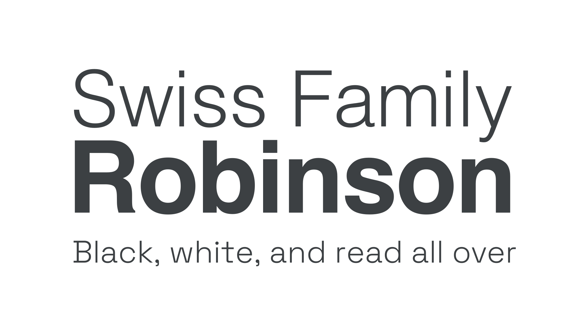

Grotesque & Neo-grotesque
By Google Fonts Knowledge contributors · Google Fonts Knowledge.
Original article · Source on GitHub · CC BY-SA 4.0. Text, illustrations and existing credits reproduced from the licensed Knowledge repository. Open Shelf adapted the layout and links; these adaptations are also CC BY-SA 4.0. No endorsement implied.
Grotesque was the first form of sans serif type. It appeared in the early 19th Century, and had a somewhat irregular and awkward form (hence the name). The more refined evolution of this style, popular in the mid 20th century, became known as Neo-grotesque.

Examples of Neo-grotesque typefaces include Space Grotesk and Work Sans.
However, it’s important to note that—like any historical classification—Grotesque typefaces that fit this style don’t necessarily come from this period in history.